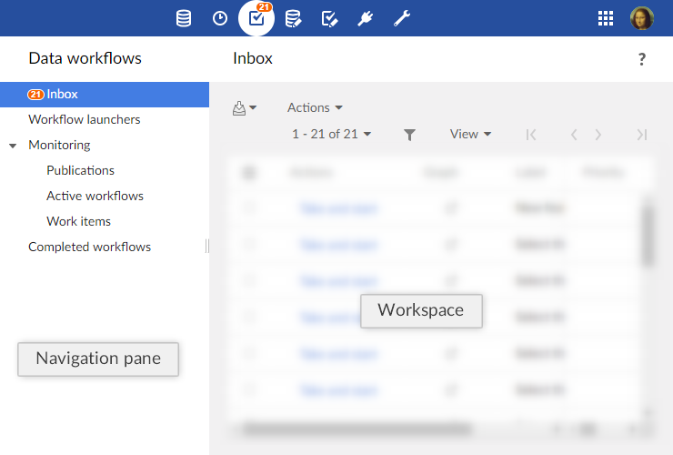
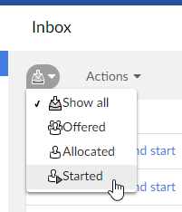

Using the Data Workflows area user interface
Navigating within the interface
Data workflow functionality is located in the Data Workflows area of the TIBCO EBX® user interface.

Note
This area is available only to authorized users in the 'Advanced perspective' or from a specifically configured perspective. Only authorized users can access these interfaces.
The navigation pane is organized into several entries. These entries are displayed according to their associated global permission. The different entries are:
Work items inbox | All work items either allocated or offered to you, for which you must perform the defined task. |
Workflow launchers | List of workflow model publications from which you are allowed to launch data workflows, according to your user permissions. |
Monitoring | Monitoring views on the data workflows for which you have the necessary viewing permissions. |
Publications | Publications for which you have the necessary viewing permissions. If you have additional administrative permissions, you can also disable the ability to launch data workflows from specific publications from this view. |
Active workflows | Data workflows in the process of execution for which you have the necessary viewing permissions. If you have additional administrative permissions, you can also perform actions such as replaying steps of data workflows, and terminating the execution of data workflows from this view. |
Work items | Work items for which you have the necessary viewing permissions. If you have additional administrative permissions, you can also perform actions relevant to work item administration, such as allocating work items to specific users or roles from this view. |
Completed workflows | Data workflows that have completed their execution, for which you have the necessary viewing permissions. You can view the history of the executions of the data workflows. If you have additional administrative permissions, you can also clean completed workflows from the repository from this view. |
Navigation rules
Work items inbox
By default, once a work item has been executed, the work items inbox is displayed.
This behavior can be modified according to the next step progress strategy, which can allow to execute several steps in a row without going back to the work items inbox.
See the progress strategy of a workflow step in workflow modeling.
Workflow launchers
By default, once a workflow has been launched, the workflow launchers table is displayed.
This behavior can be modified according to the model configuration, which can allow to directly open the first step without displaying the workflow launchers table.
See the automatic opening of the first workflow step in workflow modeling.
Custom views
It is possible to define views on workflow tables and to benefit from all associated mechanisms (publication included).
Permissions to create and manage workflow table views are the same as the permissions for data table views. It may thus be necessary to change the permissions in the 'Administration' section in order to benefit from this feature, by selecting Workflow management > Workflows.
See the Views for more information.
Specific columns
By default, specific columns are hidden in the views that can benefit from it (inbox, work items monitoring, active workflows monitoring and completed workflows).
A custom view should be created and applied in order to display the specific columns. For each work item or workflow, the matching defined in the associated workflow model is then applied. If an expression is defined for a column and contains data context variables, these variables are evaluated upon display. If the expression contains built-in expressions which depend on the locale, the expression is evaluated in the default locale.
Filtering items in views
In certain tables, such as the 'Work item inbox', you can narrow down the entries displayed in the tables by viewing only the entries of a certain state. In such views, there is a menu from which you can select a state to see its corresponding items.

Workflow progress view
Whether as a user with a work item to perform, or as a data workflow monitor or administrator, you can view the progress or the history of a data workflow execution by clicking the 'Preview'  button that appears in the 'Data workflow' column of tables throughout the data workflows user interface. This opens a pop-up displaying an interactive progress view of the data workflow's execution. In this view, you can see the overall progress of the execution, as well as click on an individual step to view the details of its information.
button that appears in the 'Data workflow' column of tables throughout the data workflows user interface. This opens a pop-up displaying an interactive progress view of the data workflow's execution. In this view, you can see the overall progress of the execution, as well as click on an individual step to view the details of its information.
If steps have been defined as hidden in the workflow modeling, they are automatically hidden in the workflow progress view for non-administrator users (non built-in administrators and non workflow administrators). A button is available to display hidden steps. The choice of users (show or hide steps) is saved by user, by publication during the user session.
For user tasks performed using the new mode (single work item), the main information about the single work item is directly displayed in the workflow progress view, when applicable: the avatar of the user associated with the work item, and the decision that has been taken for the work item (accepted or rejected).
 User guide table of contents
User guide table of contents